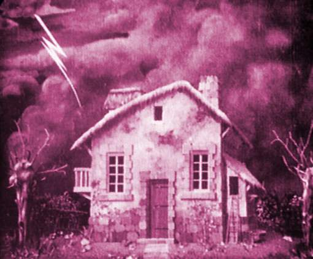

Más allá de la puesta en escena y de los arquetipos que ayudan a definir el género como tal, la pieza radical donde gira todo el género cinematográfico del terror es sobre las emociones del espectador. Dicho género se define cuando el público es seducido por las espeluznantes imágenes que regala la gigantesca pantalla. Es verdad que existen una serie de clichés que no suelen fallar, como por ejemplo: lo desconocido, lo no habitual, o monstruos horrorosos que obligan al espectador a taparse los ojos y a aferrarse a la butaca. Aunque las emociones son relativas, cada ser humano experimenta el miedo de forma particular, no a todas las culturas les asusta lo mismo y no a todas las personas les dan miedo las mismas cosas. No obstante, debemos considerar que existen ciertos clichés (la estructura arquetípica y la puesta en escena, efectos sonoros…), que desde las primeras películas expresionistas hasta hoy son utilizados para asustar a los espectadores. En las siguientes líneas explicaremos cuales son estos clichés y las características del cine de terror:
Otras señas de identidad del género de terror son un uso muy particular de la iluminación, que muchas veces tiende a inspirarse en la pintura romántica alemana del siglo XIX, la cual se caracteriza por el recurso frecuente al claroscuro, a los contrastes de colores y los tonos penumbrosos, efectos muy apreciables en el cine expresionista de los primeros años (Murnau, Fritz Lang).

Los espacios o escenarios más utilizados serán durante la noche en cementerios, casas abandonadas, castillos tenebrosos, ruinas, laboratorios, bosques, jardines abandonados… todos estos lugares han terminado conformando un catálogo común dentro del género. El cine de terror se basa en lo oculto y misterioso, lo define como género, y lo hace tanto en el plano arquetípico como en su desarrollo escenográfico. Lo oculto sugerido sirve tanto para referirse a la temática del cine de terror, como a su caracterización y puesta en escena, a través del deterioro aparente del decorado y las localizaciones en espacios recónditos donde poca gente logra llegar.
Asimismo, nunca debe faltar una banda sonora densa y sugerente por ejemplo en El resplandor, Psicosis o en Tiburón. El uso de efectos de sonido como se pueden oír en el vídeo resultan clave para lograr la atmósfera aterradora que todo director persigue. De hecho, no solo la música y los efectos de sonido son esenciales, sino que no son nada si no se combinan con los silencios. Sin la combinación de estos tres elementos no sería lo mismo ver El exorcista o el Drácula de Bram Stoker de Coppola, por ejemplo. Con esos silencios se consiguen atmósferas inesperadas y angustiantes.
El motor temático de estas películas es, en muchos casos, la exhibición de la crueldad, humana, bestial o sobrenatural, como representación del Mal y de la muerte. Son recurrentes también las preguntas sobre el más allá y lo desconocido, o también brujos y magia negra o monstruos que tiene su mejor ejemplo en Frankenstein. La pérdida de identidad y el miedo a la locura, que está presente en visible en filmes como La invasión de los ladrones de cuerpos (1956), también en El exorcista (1973), mediante la posesión por el demonio. O la transformación del Dr. Jekyll.
Una de las características más destacadas del cine de terror es la de la ocultación de ciertos elementos para crear tensión dramática junto con los efectos de sonido y la banda sonora. Para ello se recurre a la técnica del fuera de campo (la escena terrorífica transcurre fuera del objetivo de la cámara, la cual se centra en el protagonista) con lo que el espectador empieza a sentir tensión y a imaginar cuando aparecerá el asesino/monstruo.